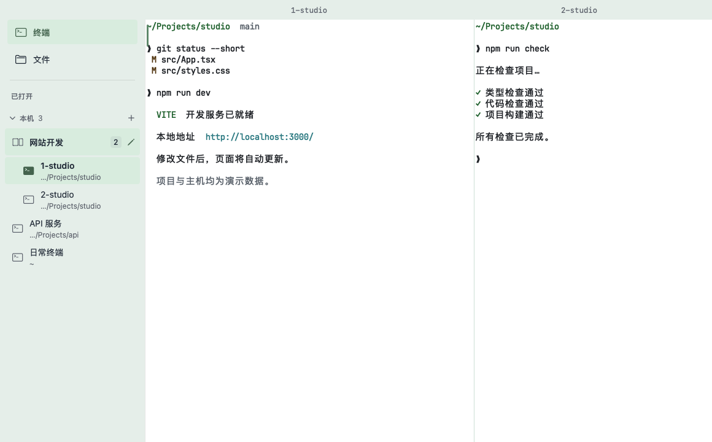
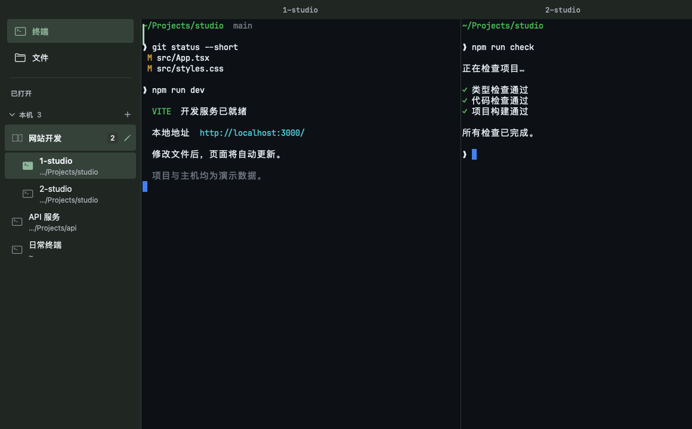
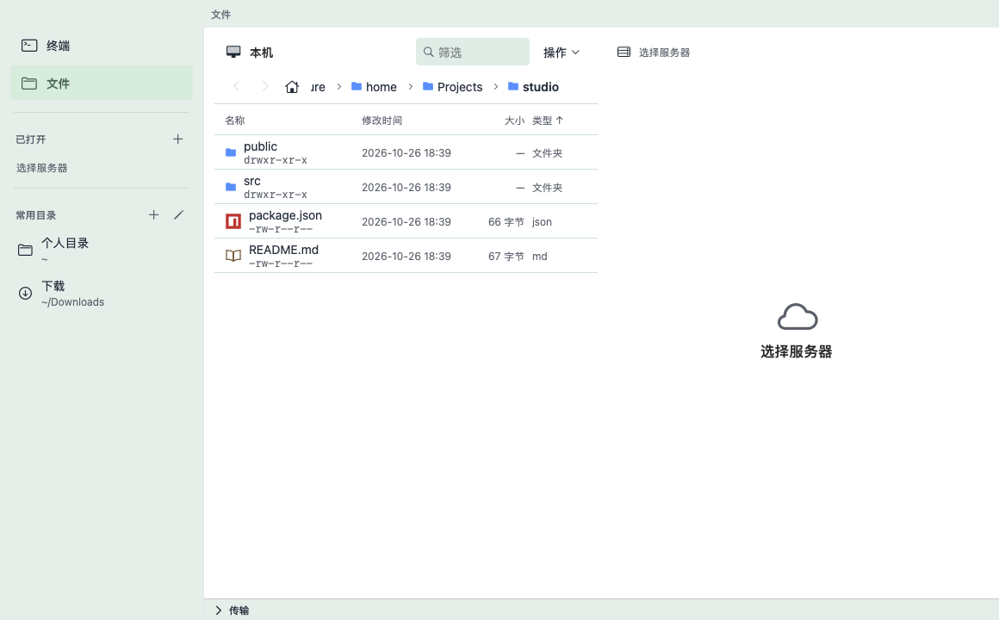
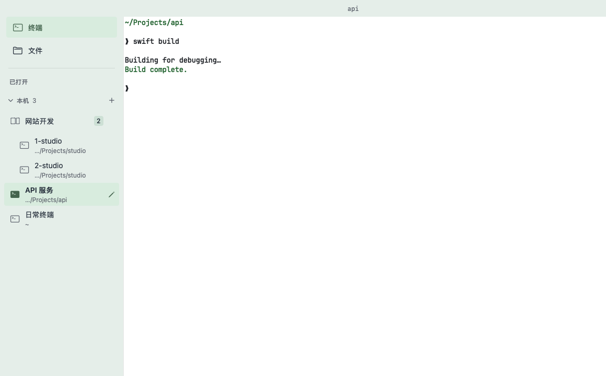
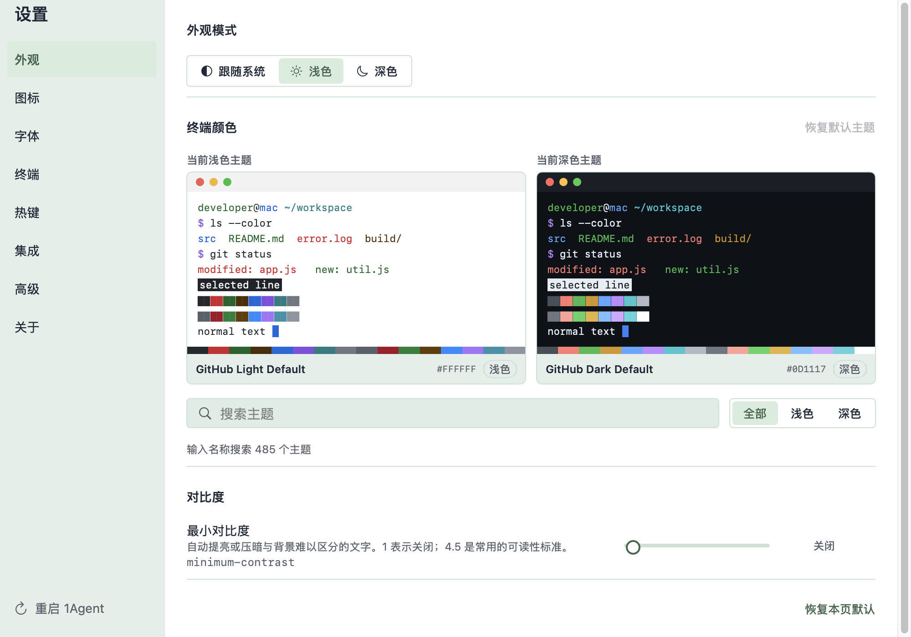

原生终端引擎
由 Ghostty 驱动，保留熟悉的终端交互。

原生、顺手的 Mac 终端。
为每一次敲下命令而设计。
本机与远程、终端与文件，都在熟悉的工作空间。



原生界面截图，项目与命令使用演示数据。

继续用你的 Shell、密钥和 SSH 配置。1Agent 把本机和远程会话放在同一个原生窗口里，再给常用的分屏、文件与快捷命令留好位置。
打开就能工作，回来也能找到上下文。
看看它能做什么以 Ghostty 为终端引擎，为 Mac 上的日常工作整理好每个细节。
由 Ghostty 驱动，保留熟悉的终端交互。
命令与服务并排运行，随时切换焦点。
浏览本机与远程目录，预览和管理文件。

应用配色与终端主题，分别设置。
给项目命名、分组，找到正在处理的任务。
读取 ~/.ssh/config，继续使用现有连接配置。
保留终端输出与会话布局，下次回来继续。
快捷命令、自动化，以及更多顺手的细节。
用侧栏组织会话，用分屏展开任务。按自己的习惯来。
本机会话、远程连接与项目分组，集中在侧栏。
一边运行服务，一边继续敲命令。
浏览目录和预览文本，减少来回切换。
深浅外观、应用配色与独立的终端主题。
从本机终端到文件浏览，在一个工作空间里接着做。
先看清主机状态，再打开终端接手处理。
适用于 macOS 14 或更高版本，免费，MIT 开源。
下载 macOS 版当前分发版本未经过 Apple 公证，首次打开请按安装指南确认。
也可前往 GitHub 发布页 下载。